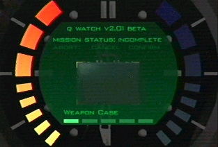
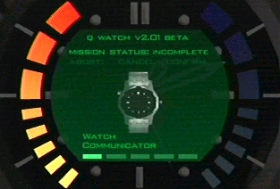
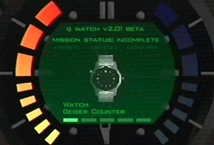
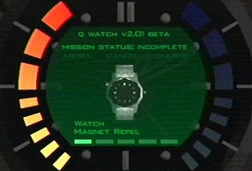
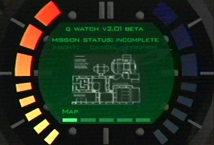
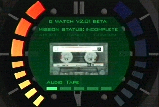
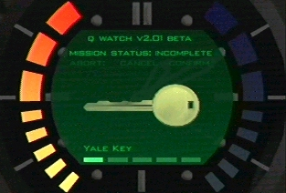
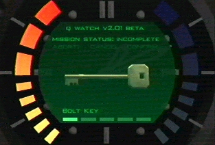

| 
|
BOMB CASE
On
peut poser cette Valise comme une Mine. Rien de bien extra-ordinaire
mais bon !
Attention, elle explose comme une Timed Mine ! |
21
|
| 
|
WEAPON CASE
A
quoi pouvait bien servir cette Valise ? A porter ses Armes
? Ou fallait-il la récuperer dans un Objectif ? |
2C
|
| 
|
MICRO CAMERA
Voilà
un Objet interessant, prévu à l'origine semble-t-il
pour le Casino. On
peut en poser tant que l'on veut si vous avez des Munitions
Infinies ! |
30
|
| 
|
POLARIZED GLASSES
Alors
là je sais pas, à moins que ce soient des Rayons-X
comme pour Perfect Dark ? |
33
|
| 
|
GAS KEYRING
l
parait que cette Arme était utilisée dans un
Film des James Bonds : The Living Daylights. |
36
|
| 
|
WATCH COMMUNICATOR
Il
parait que c'était pour contacter Trevelyan dans Facility. |
39
|
| 
|
WATCH GEIGER COUNTER
Cet Objet était utilisé dans
Thunderball. Comment il l'était dans Goldeneye, on
en sait rien ! |
3A
|
| 
|
WATCH MAGNET REPEL
L'Opposé
de la Montre Magnétique. Mais pour quelle utilisation
?! On en sais rien non plus. |
3B
|
| 
|
PLANS
|
Des
Plans ? Mais de quoi ? Du Silo ? Rare n'a jamais dit que Oroumov
les avait... Mystere. |
43
|
| 
|
MAP
Ce
sont les Plans du Bunker, mais sous un autre nom. |
46
|
| 
|
AUDIO TAPE:
Un Objet à récuperer ?
Pourquoi pas !
47
|
| 
|
YALE KEY:
Cette
Clé existe aussi dans le Jeu,
mais sous un autre Nom.
52
|
| 
|
BOLT KEY:
Un
Nom provisoire sans aucun doute.
53
|